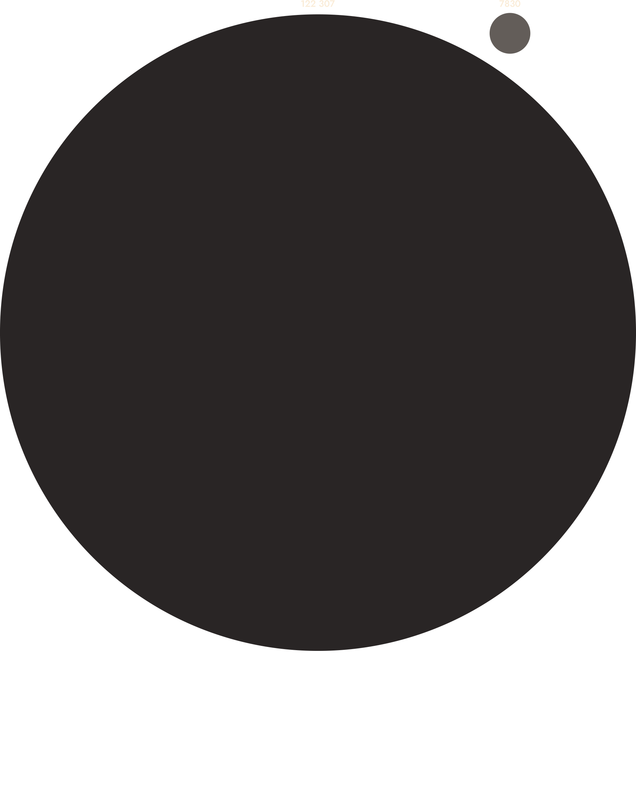

POMPIDOU
Une Visualisation Graphique
de la Collection de Design
de la Collection de Design
Acquisition par Decade
Creation
Acquisition
Vue d'Ensemble
Collection Design de Pompidou
Collection Design de Pompidou
Le Centre Pompidou à Paris, France, possède une vaste collection de pièces de
design,
allant du design graphique au design d'objets en passant par le design de mode. Notre objectif était
de créer une série de visualisations de données mettant en valeur cette collection et permettant aux
utilisateurs d'explorer plus en détail ce qu'elle contient. Le premier graphique est une chronologie
de la collection, opposant la date de création de la pièce de design à la date d'acquisition par la
collection. L'utilisateur peut survoler les dates et les quantités pour voir plus précisément quand
les pièces ont été créées ou acquises par année. Cela donne une vue précise du moment où les pièces
ont été créées puis acquises. Les grandes pointes de dons sont souvent dues à un grand don d'une
seule entité, comme Vincent Perrottet et Sido Perrottet, qui en 2017 a donné 1723 pièces de ses
collections personnelles principalement de design graphique et d'œuvres illustratives.
LEGENDE
Naviguez en survolant chaque date et élément du graphique.
LEGENDE
Naviguez en survolant chaque date et élément du graphique.
Vue Detaillée
Collection Design de Pompidou
Collection Design de Pompidou
Le deuxième graphique est une plongée approfondie dans la collection elle-même.
Chaque pièce est représentée ici, avec sa forme déterminée par la date de sa création et la date à
laquelle elle a été acquise par la collection. Les couleurs différencient plusieurs catégories
différentes. Le cercle de gauche montre le type d'acquisition, dont il existe de nombreux, tandis
que celui de droite montre le genre, s'il s'agit d'un solo ou d'un groupe de designers. La ligne
centrale principale est colorée en fonction du type de design auquel la pièce appartient. Cela donne
une vue chromatique et temporelle de chaque pièce. Cet élément interactif permet également au
spectateur de survoler chaque pièce, affichant toutes les informations concernant la pièce dans une
infobulle.
Cette collection se compose de 7230 pièces chacune cataloguée et référencée par le
MNAM et Videomuseum. Cela nous a permis de donner une vision précise de l'origine, du type, de la
taille ou des matériaux de construction de chaque pièce unique. Le centre lui-même, sous la
direction de Jean Widmer, a utilisé une palette chromatique variée pour différencier chaque section
du musée, et c'est quelque chose que nous voulions partager.
Naviguez en survolant chaque élément individuel.
Naviguez en survolant chaque élément individuel.
Vue d'Ensemble
Collection Design de Pompidou
Collection Design de Pompidou
Pour améliorer encore la vision globale de la collection, nous avons également
conçu une carte montrant l'origine et la quantité de designers par pays. Inspirée par les cartes
Isotype d'Otto Neurath, la carte montre la répartition mondiale des artistes, avec une présence plus
importante en Europe. Une mise en garde cependant : certains de ces éléments compte comme un seul designer,
bien
qu'ils soient parfois composés de plus d'un membre. Nous avons compté chaque pièce ayant été
produite par une seule entité.
Designer
Les Plus Représenté
Les Plus Représenté
La collection abrite des œuvres de 905 designers, entreprises et studios. La grande
majorité d'entre eux ont produit entre 1 et 10 pièces acquises par la collection. Quelques-uns en
revanche ont une très grande quantité, faussant certaines des échelles. Ettore Sottsass, par
exemple, est le plus représenté avec 493 pièces individuelles. Il faut toutefois prendre en compte
que, tandis que certains designers produisent des pièces compliquées et coûteuses, d'autres peuvent
donner des centaines de dessins, ce qui augmente la taille de leur contribution.
Designer
Les Plus Représenté
Les Plus Représenté
Pour conclure, nous avons une représentation simple de la collection de design en
comparaison avec le reste de la collection globale du Centre Pompidou. Le Musée reste avant tout un
centre pour les beaux-arts et cela est assez clair ici. Cependant, la collection continuera sûrement
de croître à mesure que de plus en plus de designers produiront de nouvelles créations
intéressantes.


